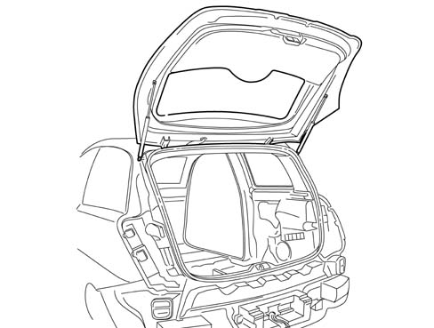

Introduction - TAILGATE/
- Path
- Descriptions > 70 FITTINGS > 7015 TAILGATE/ > Introduction - TAILGATE/
- Kind
- system description
- Applies to
- all engines; all production periods
- Interactive page
- https://sloeber94.github.io/elrnDB-lYpsln/en/#/2429860
Applies to: all engines; all production periods
The tailgate is manufactured using conventional pressing processes and includes large window bonded flush with the tailgate. The edges that overlap the structure are screen-printed in black.
The window contains a demising circuit, an opening in the lower centre section that houses the rearscreen wiper blade control and there is a reference etched on the left side for zeroing the rear wiper blade. The third brake light houses the rearscreen washer jet; the tailgate has an inner cover that houses an inspection window with the emergency opening cable on the right hand side.
The tail-gate can be opened:
- by operating a button in the number plate mount
- by remote control, via a button on the remote control unit.
- through an emergency cable
The tail-gate is held in position by two gas struts.
Applies to: all engines; all production periods
View of tail-gate components

1 - Tail-gate 2 - Tail-gate catch 3 - Rear wiper motor 4 - Wiper blade 5 - Telescopic struts 6 - Tailgate hinges 7 - Interior lining 8 - Third brake light/rear washer 9 - Hole for emergency opening 10 - Emergency opening cable